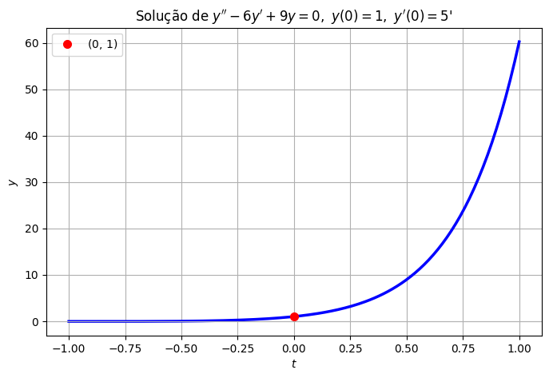
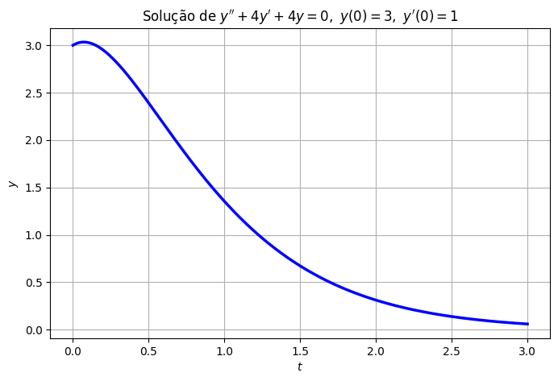
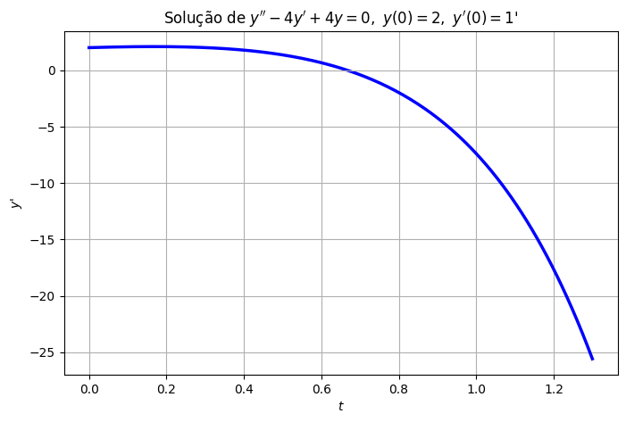

Raízes Reais Repetidas#
Na aula passada, resolvemos \(ay''+by'+cy=0\) para o caso \(\Delta=b^2-4ac>0\) (raízes reais e distintas).
Ficaram faltando dois casos:
\(\Delta=0\): uma raiz repetida, que é o assunto de hoje;
\(\Delta<0\): raízes complexas, que fica para o próximo tópico.
Exemplo 1: um problema#
Resolva
A equação característica é
Temos uma solução, \(y_1=e^{3t}\). Seguindo a receita da aula passada, tentaríamos
Só que aqui mora um problema: \(c_1\) e \(c_2\) nunca aparecem separados, só na soma \(c_1+c_2\). Ou seja, não importa quais valores escolhamos, a expressão inteira se comporta como se houvesse uma única constante, \(C=c_1+c_2\):
Vamos tentar ajustar as condições iniciais mesmo assim. De \(y(0)=1\): \(C=1\). Derivando, \(y'=3Ce^{3t}\), então \(y'(0)=3C=3\). Mas a condição inicial pede \(y'(0)=5\)! Não tem jeito: com uma única constante livre, conseguimos satisfazer apenas uma condição inicial, mas não duas ao mesmo tempo.
Isso é um sintoma de que \(y_1=e^{3t}\) sozinha não é suficiente. Para uma equação de segunda ordem, precisamos de duas soluções genuinamente diferentes e não apenas múltiplos uma da outra, como \(e^{3t}\) e \(2e^{3t}\), que descrevem exatamente a mesma curva a menos de escala. Vamos chamar esse par de “soluções fundamentais” (sem entrar em detalhes técnicos por enquanto) e ver como encontrar a segunda.
E se multiplicarmos por \(t\)?#
Precisamos de uma segunda solução que não seja apenas um múltiplo de \(e^{3t}\). Uma ideia natural (e que vai funcionar) é experimentar
Calculando as derivadas:
Substituindo em \(y''-6y'+9y\):
Funcionou! E, como \(y_2=te^{3t}\) tem aquele fator extra \(t\), ela não é múltiplo de \(y_1=e^{3t}\), elas são duas soluções genuinamente diferentes.
Assim, agora temos uma solução geral, dada por
Usando as condições iniciais: \(y(0)=c_1=1\). Derivando, \(y'=3c_1e^{3t}+c_2(1+3t)e^{3t}\), e \(y'(0)=3c_1+c_2=5\). Com \(c_1=1\): \(c_2=2\).
Logo, a solução é
import numpy as np
import matplotlib.pyplot as plt
t_vals = np.linspace(-1, 1, 200)
y_vals = (1 + 2*t_vals)*np.exp(3*t_vals)
plt.figure(figsize=(8, 5))
plt.plot(t_vals, y_vals, 'b', linewidth=2.5)
plt.plot(0, 1, 'ro', markersize=7, label='$(0,\\,1)$')
plt.axhline(0, color='0.7', linewidth=0.8)
plt.title(r"Solução de $y''-6y'+9y=0,\ y(0)=1,\ y'(0)=5$'")
plt.xlabel(r"$t$"); plt.ylabel(r"$y$")
plt.legend()
plt.grid(True)
plt.show()

Exemplo 2: aplicando o método#
Resolva
Equação característica: \(r^2+4r+4=(r+2)^2=0 \Rightarrow r=-2\) (repetida). Pelo mesmo padrão do Exemplo 1, a solução geral já é
De \(y(0)=c_1=3\). Derivando, \(y'=-2c_1e^{-2t}+c_2(1-2t)e^{-2t}\), e \(y'(0)=-2c_1+c_2=1\). Com \(c_1=3\): \(c_2=7\). Logo,
t_vals = np.linspace(0, 3, 200)
y_vals = (3 + 7*t_vals)*np.exp(-2*t_vals)
plt.figure(figsize=(8, 5))
plt.plot(t_vals, y_vals, 'b', linewidth=2.5)
plt.axhline(0, color='0.7', linewidth=0.8)
plt.title(r"Solução de $y''+4y'+4y=0,\ y(0)=3,\ y'(0)=1$")
plt.xlabel(r"$t$"); plt.ylabel(r"$y$")
plt.grid(True)
plt.show()

O caso geral: testando \(y=u(t)e^{rt}\)#
Vamos generalizar o que descobrimos nos dois exemplos. Quando a equação característica \(ar^2+br+c=0\) tem uma raiz repetida — isto é, quando \(\Delta=b^2-4ac=0\) — a única raiz é
Já temos uma solução, \(y_1=e^{rt}\). Inspirados pelos exemplos, vamos procurar uma segunda solução da forma
onde \(u(t)\) é uma função a ser determinada.
Nos exemplos, deu certo com \(u(t)=t\), mas vamos ver por que isso funciona, e se é a única opção.
Calculando as derivadas (regra do produto):
Substituindo em \(ay''+by'+cy=0\) e agrupando por \(u''\), \(u'\), \(u\):
Como \(e^{rt}\) nunca é zero, o termo entre colchetes precisa ser zero. E agora, duas coisas boas acontecem:
O coeficiente de \(u\) é \(ar^2+br+c\), que é zero, porque \(r\) é raiz da equação característica.
O coeficiente de \(u'\) é \(2ar+b\), que também é zero, porque \(r=-b/(2a)\) é exatamente a raiz repetida (confira: \(2a\cdot(-b/2a)+b=-b+b=0\)).
Sobra só
E qual é a função mais geral com segunda derivada nula? Uma reta, dada por \(u(t)=c_1+c_2t\)!
Assim, a solução é
Essa é exatamente a estrutura que encontramos nos dois exemplos, só que agora sabemos de onde ela vem: \(u(t)=t\) não foi sorte, é a única família de soluções possível quando a raiz é repetida.
Regra geral. Se a equação característica \(ar^2+br+c=0\) tem uma raiz repetida \(r=-b/(2a)\), a solução geral de \(ay''+by'+cy=0\) é
Exemplo 3#
Resolva
Equação característica: \(r^2-4r+4=(r-2)^2=0 \Rightarrow r=2\) (repetida). Pela regra geral,
De \(y(0)=c_1=2\). Derivando, \(y'=c_2e^{2t}+2(c_1+c_2t)e^{2t}=(2c_1+c_2+2c_2t)e^{2t}\), e \(y'(0)=2c_1+c_2=1\). Com \(c_1=2\): \(c_2=-3\). Logo,
Repare que, dessa vez, o termo \((2-3t)\) muda de sinal — a solução cresce um pouco, cruza o eixo \(t\) e depois dispara para \(-\infty\) (puxada pelo \(e^{2t}\), que cresce mais rápido que qualquer reta consegue segurar).
t_vals = np.linspace(0, 1.3, 200)
y_vals = (2 - 3*t_vals)*np.exp(2*t_vals)
plt.figure(figsize=(8, 5))
plt.plot(t_vals, y_vals, 'b', linewidth=2.5)
plt.axhline(0, color='0.7', linewidth=0.8)
plt.title(r"Solução de $y''-4y'+4y=0,\ y(0)=2,\ y'(0)=1$'")
plt.xlabel(r"$t$"); plt.ylabel(r"$y$'")
plt.grid(True)
plt.show()

O que vem a seguir#
Já sabemos resolver \(ay''+by'+cy=0\) em dois dos três casos possíveis para o discriminante:
\(\Delta>0\) (raízes reais distintas)
\(\Delta=0\) (raiz repetida, hoje)
Falta só \(\Delta<0\), o caso de raízes complexas conjugadas, que é o assunto do próximo tópico. Com ele, teremos as três peças do quebra-cabeça completas, e uma receita para resolver qualquer equação linear homogênea de segunda ordem com coeficientes constantes.